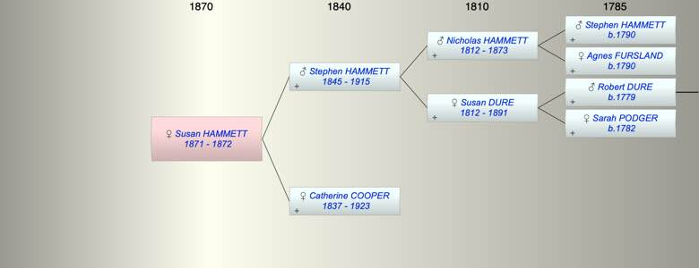

| [Index] |
| Susan Annie HAMMETT (1871 - 1872) |
|  |
| b. 1871 at Plymouth |
| d. 1872 at Plymouth aged 1 |
| Near Relatives of Susan Annie HAMMETT (1871 - 1872) | ||||||
| Relationship | Person | Born | Birth Place | Died | Death Place | Age |
| Grandfather | Nicholas John HAMMETT | 1812 | Plymouth | 1873 | Plympton St Mary | 61 |
| Grandmother | Susan DURE | abt 1812 | 1891 | Plympton St Mary | 79 | |
| Father | Stephen HAMMETT | 16 Jun 1845 | Plympton St Mary | 29 Apr 1915 | Plymouth | 69 |
| Mother | Catherine Julyan COOPER | 1837 | Falmouth | 05 May 1923 | Plymouth | 86 |
| Self | Susan Annie HAMMETT | 1871 | Plymouth | 1872 | Plymouth | 1 |
| Half Brother | WIlliam JANE COOPER | 1864 | Falmouth | |||
| Sister | Living or Recently Deceased | |||||
| Uncle | Robert H HAMMETT | 1838 | Stokenham | |||
| Aunt | Elizabeth Downing OLIVER | 1834 | Exeter | 1926 | Plymouth | 92 |
| Aunt | Sarah Agnes HAMMETT | 1841 | Plymton | 1880 | 39 | |
| Uncle | Charles BREWER | 1851 | Starcross | |||
| Cousin | Living or Recently Deceased | |||||
| Cousin | George Goodwin BREWER | 27 Jan 1886 | Teignmouth | 1894 | 8 | |
| Cousin | Living or Recently Deceased | |||||
| Cousin | Living or Recently Deceased | |||||
| Cousin | Stewart G BREWER | 05 Jul 1890 | Teignmouth | 1892 | 2 | |
| Cousin | Charles Goodwin BREWER | 1884 | ||||
| Sister in Law | Phoebe Ann Newbury ROBERTS | |||||
| Events in Susan Annie HAMMETT (1871 - 1872)'s life | |||||
| Date | Age | Event | Place | Notes | Src |
| 1871 | Susan Annie HAMMETT was born | Plymouth | |||
| 1872 | 1 | Susan Annie HAMMETT died | Plymouth | ||
| Created on a Mac™ using iFamily for Mac™ on 15 Sep 2023 |